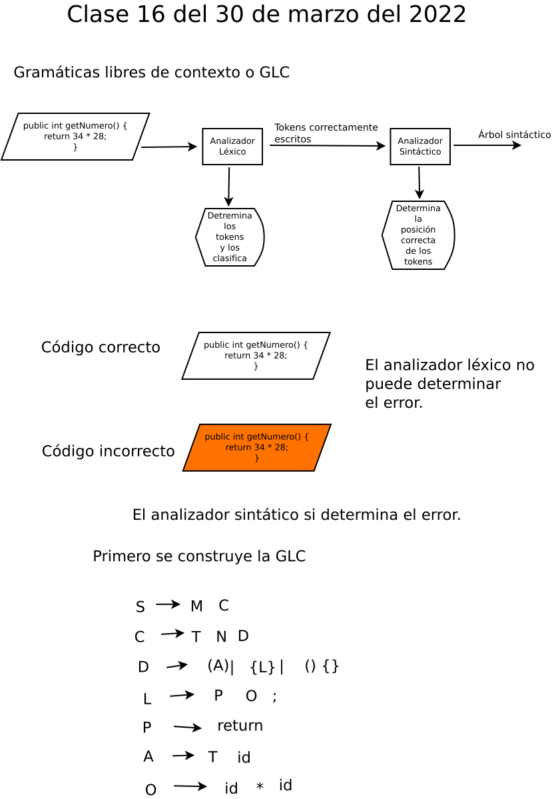

Se presentan las actividades para hacer sentir al estudiante los valores que le apoyarán para ser buen estudiante y buen ciudadano.
 José Sánchez Juárez
José Sánchez JuárezIPN-ESCOM
correo-e: jsanchezj60@gmail.com
cel.5568907053
TEMA 3.1 ANÁLIZADORES SINTÁCTICOS
TEMA 3.1.1 GRAMÁTICAS AMBIGUAS
TEMA 3.1.2 ELIMINACIÓN DE LA RECURSIÓN IZQUIERDA
Pizarrón, archivo dia: SNCompiladores/COMpizarronClase16.dia

Se presentan las actividades para hacer sentir al estudiante los valores que le apoyarán para ser buen estudiante y buen ciudadano.
| Pensamientos | Lecturas | Moral | Poemas | Política Económica |
|---|---|---|---|---|
El objetivo: El Estudiante construirá programas para implementar un analizador sintáctico.
Se presentan las definiciones, formas de código, ejemplos y ejercicios para la presentación de los analizadores sintácticos.
| DEFINICIÓN | EJEMPLO | EJERCICIO |
|---|---|---|
DEFINICIÓN (Nodo.) Un constructor es parecido a un método en el que se puede tener un especificador de acceso (público o privado), un nombre, parámetros y código ejecutable. Sin embargo, los constructores tienen las siguientes diferencias o caracterı́sticas especiales:
José Sánchez Juárez
IPN-ESCOM
correo-e: jsanchezj60@gmail.com
cel.5568907053